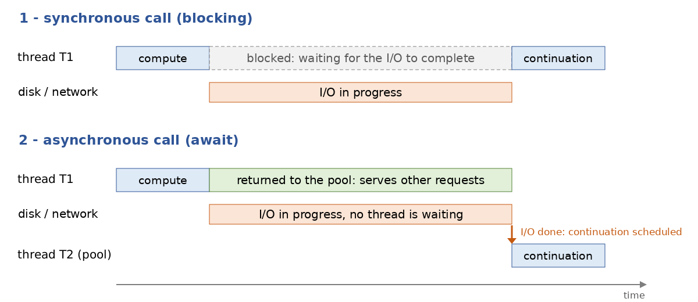

9. Programación asíncrona
El capítulo anterior presentó los hilos: podemos ejecutar varios fragmentos de código «al mismo tiempo», sincronizarlos y asignar tareas al grupo de hilos. Este capítulo, que no estaba incluido en el curso de 2008, aborda un problema relacionado pero distinto: cómo escribir un programa que espere mucho tiempo (al disco, a la red o a una base de datos) sin bloquear hilos durante esas esperas. La respuesta en .NET reside en dos palabras clave del lenguaje C#, [async] y [await], y en un tipo, [Task]. Hoy están en todas partes: los capítulos siguientes las utilizarán para acceder a bases de datos ([OpenAsync], [ExecuteReaderAsync], [ToListAsync], [SaveChangesAsync]), para escribir servidores TCP ([AcceptTcpClientAsync]), clientes web ([HttpClient]) y servicios web con ASP.NET Core.
Todos los ejemplos de este capítulo son aplicaciones de un solo archivo ([async-01.cs], [async-02.cs]…) que se ejecutan mediante [dotnet run async-NN.cs] en la carpeta [09-async]. Muchos de ellos miden duraciones con un cronómetro ([Stopwatch]): los milisegundos mostrados varían de una ejecución a otra y de una máquina a otra (los ejemplos se ejecutaron en una máquina de dos procesadores). Lo que importa son los órdenes de magnitud : 1 segundo o 3 segundos, 300 ms o 0 ms.
9.1. Por qué la asincronía
9.1.1. Operaciones que esperan
Un programa realiza dos tipos de trabajo:
- tareas de cálculo, que ocupan el procesador: ordenar una lista, calcular un impuesto, analizar un texto;
- entrada/salida (E/S), que consiste esencialmente en esperar a un dispositivo periférico: leer un archivo del disco, enviar una solicitud a un servidor web y esperar su respuesta, ejecutar una consulta SQL en un servidor de base de datos.
Los órdenes de magnitud son muy diferentes. Un procesador ejecuta unos pocos miles de millones de instrucciones por segundo. Una operación de lectura en un disco (SSD) tarda del orden de una décima de milisegundo; un viaje de ida y vuelta por una red local toma una fracción de milisegundo; un viaje de ida y vuelta a un servidor ubicado al otro lado del país toma unas pocas decenas de milisegundos; y una solicitud SQL algo compleja puede tardar a veces varios segundos. Durante estas esperas, el procesador podría haber ejecutado millones de instrucciones.
Cuando un programa lee una línea a través de una conexión de red mediante un método síncrono (bloqueante), el hilo que realiza esta lectura queda bloqueado: no hace nada, pero sigue existiendo. Ocupa memoria (su pila, del orden de un megabyte), es reconocido por el sistema operativo y, sobre todo, ya no está disponible para hacer otra cosa. Esto no es un problema en un pequeño programa de consola que hace una sola cosa a la vez. Es mucho más problemático en dos situaciones:
- en un servidor: cada cliente atendido por un hilo bloqueado inmoviliza ese hilo. El curso de 2008 ya lo explicaba en la conclusión de su análisis del cliente TCP asíncrono: si el grupo de hilos tiene N hilos y los N hilos realizan una operación bloqueante, no queda ningún hilo disponible para un nuevo cliente. Un servidor web moderno atiende miles de solicitudes simultáneas con solo unas pocas decenas de hilos: esto es posible porque sus hilos nunca se bloquean en operaciones de E/S;
- en una interfaz gráfica de usuario: un único hilo —el hilo de la interfaz— gestiona los clics y vuelve a dibujar las ventanas. Si una descarga lo bloquea, la ventana se congela.
La asincronía consiste en iniciar la operación de E/S, liberar el hilo mientras esta se ejecuta (el hardware y el sistema operativo no lo necesitan para transferir los datos) y retomar el trabajo una vez completada la operación, posiblemente en un hilo distinto:

- En [1], el hilo T1 inicia la E/S y permanece bloqueado hasta que termina;
- en [2], el hilo T1 inicia la E/S y regresa al grupo de hilos, donde puede atender otras solicitudes. Cuando la operación de E/S se completa, el sistema lo notifica a .NET, que hace que un hilo del grupo —T2 (o T1, si está disponible)— ejecute el resto del procesamiento.
El programa [async-01.cs] mide la diferencia en 100 operaciones, cada una de las cuales espera un segundo (la espera simula la E/S). Utiliza instrucciones que explicaremos más adelante en este capítulo ([Task.Run], [Task.Delay], [await]); aquí solo nos interesan los resultados.
Resultados:
Comentarios:
- Líneas 8–21: la solución del curso de 2008, un hilo por operación. Cada hilo ejecuta [Thread.Sleep(1000)]: queda bloqueado durante un segundo. Las 100 esperas ocurren simultáneamente y todo el proceso dura exactamente un segundo (línea 4), pero al costo de 100 hilos adicionales: el proceso tiene ahora más de 100 hilos (línea 3). Con 10 000 operaciones, se necesitarían 10 000 hilos;
- líneas 23–31: las operaciones se delegan al grupo de hilos ([Task.Run]), que se presentó en el capítulo anterior. El grupo comienza con tantos hilos como procesadores hay (2 en este caso) y agrega más solo gradualmente cuando todos están ocupados, ya que supone que sus hilos están realizando cálculos y que no hace falta tener muchos más hilos que procesadores. Pero aquí sus hilos no calculan: están inactivos. Las operaciones esperan un hilo libre y todo el proceso tarda… más de veinte segundos (línea 6). Esto se conoce como «inanición del grupo de hilos» (thread pool starvation), el defecto más común en los servidores que combinan grupos de hilos con E/S bloqueante;
- líneas 34–41: las esperas son asíncronas ([Task.Delay] en lugar de [Thread.Sleep]). Ningún hilo se bloquea durante la espera: un temporizador del sistema despertará a .NET después de un segundo. Todo el proceso dura un segundo y el número de hilos no aumenta (los hilos mostrados en la línea 7 son los que el grupo creó durante el paso 2; están inactivos);
- línea 51: [Process.GetCurrentProcess()] da acceso al proceso en ejecución; su propiedad [Threads] es la colección de sus hilos (los de .NET y los del sistema).
Recordemos la lección: para esperar, no se debe bloquear un hilo. La asincronía no hace que la E/S sea más rápida; permite manejar muchas operaciones de E/S simultáneamente con pocos hilos y mantener disponibles los hilos que la aplicación necesita (el hilo de la interfaz gráfica, los hilos del grupo de un servidor).
9.1.2. Tres modelos sucesivos
.NET propuso tres maneras de escribir código asíncrono. Los dos primeros todavía se encuentran en código heredado y en artículos antiguos, por lo que es útil reconocerlos.
Modelo | Origen | Principio |
APM («Asynchronous Programming Model») | .NET 1.0 (2002) | un par de métodos: [BeginXxx] y [EndXxx]. [BeginXxx] inicia la operación y recibe un método de devolución de llamada ([AsyncCallback]); el método de devolución de llamada, ejecutado por un hilo del grupo al final de la operación, llama a [EndXxx] para obtener el resultado o la excepción. Ejemplo: [Socket.BeginConnect] / [EndConnect], utilizado por el cliente TCP asíncrono del curso de 2008. |
EAP («Event-based Asynchronous Pattern») | .NET 2.0 (2005) | un método [XxxAsync] que inicia la operación y un evento [XxxCompleted] que se dispara al completarse. Ejemplos: [WebClient.DownloadStringAsync] y [DownloadStringCompleted], la clase [BackgroundWorker] (eventos [DoWork], [ProgressChanged], [RunWorkerCompleted]) estudiada en el curso de 2008. |
TAP («Task-based Asynchronous Pattern») | .NET 4.0 (2010), C# 5 (2012) | un método [XxxAsync] que devuelve una tarea ([Task] o [Task<T>]) que representa la operación en curso. El código que llama espera la tarea mediante la palabra clave [await]. Es el modelo actual, el único utilizado en el resto del curso. |
Los patrones APM y EAP comparten el mismo defecto: el código se fragmenta. Lo que naturalmente se lee como «conectar, luego leer, luego mostrar» se convierte en un método que inicia la conexión, un método de devolución de llamada que comienza la lectura y otro método de devolución de llamada que muestra los datos; las variables deben compartirse entre estos métodos, las excepciones se gestionan en lugares distintos y un simple bucle («leer mientras haya datos») se convierte en un método de devolución de llamada que se llama a sí mismo de forma recursiva, como el método de lectura ([lecture]) del curso de 2008. El patrón TAP, junto con [async] y [await], permite escribir código asíncrono que tiene la forma de código síncrono.
El programa [async-02.cs] escribe el mismo cliente TCP según los dos modelos extremos, APM y TAP. También contiene un pequeño servidor, ejecutado por un hilo, que responde a dos clientes (la programación de redes se tratará en detalle en el capítulo 12; por ahora basta saber que un cliente se conecta al servidor y lee el mensaje que este le envía).
Resultados:
Comentarios:
- líneas 8–21: el servidor. Escucha en el puerto 27500 de la máquina local ([IPAddress.Loopback], es decir, 127.0.0.1), acepta dos conexiones una tras otra y envía a cada cliente un mensaje de bienvenida después de medio segundo;
- líneas 24–54: el cliente escrito según el patrón APM, como en el curso de 2008:
- línea 29: [BeginConnect] inicia la conexión y cede el control de inmediato (línea 3 de los resultados). Sus dos últimos parámetros son el método de devolución de llamada que se invocará al final de la conexión, [Connected], y un objeto arbitrario que el método de devolución de llamada encontrará en la propiedad [AsyncState] de su parámetro [IAsyncResult]: en este caso, el propio socket;
- línea 32: el hilo principal ya no tiene nada que hacer. Para evitar que el programa termine antes de que se complete el intercambio, espera una señal que enviará el último método de devolución de llamada: un objeto [ManualResetEventSlim], cuyo método [Wait] bloquea el hilo que lo llama hasta que otro hilo llame a su método [Set] (es una versión ligera de las barreras [AutoResetEvent] vistas con los hilos);
- líneas 35–43: el método de devolución de llamada de la conexión. Debe llamar a [EndConnect] con el parámetro recibido: esta llamada termina la operación y lanzaría una excepción si la conexión hubiera fallado. Luego inicia la operación de lectura con [BeginReceive], especificando un segundo método de devolución de llamada, [Received];
- líneas 47–54: la devolución de llamada de lectura obtiene el número de bytes recibidos mediante [EndReceive], muestra el mensaje, cierra el socket y libera el hilo principal;
- los resultados muestran que los métodos de devolución de llamada son ejecutados por un hilo distinto del hilo principal (un hilo del grupo, no el hilo 1);
- líneas 57–65: el mismo cliente con el modelo TAP. [ConnectAsync] y [ReceiveAsync] devuelven tareas, y [await] espera a que terminen sin bloquear el hilo: el código se lee de arriba abajo como código síncrono; las variables son variables locales ordinarias; no hay métodos de devolución de llamada ni señales que gestionar. El hilo que ejecuta el resto del código generalmente ya no es el hilo 1: explicaremos por qué en la sección «¿Qué hilo ejecuta el resto?»;
- Línea 68: cada visualización va precedida del número del hilo que la ejecuta, [Environment.CurrentManagedThreadId].
No es necesario recordar el patrón APM. Si necesita usar una biblioteca antigua que solo ofrece este patrón, el método [Task.Factory.FromAsync] convierte un par [BeginXxx] / [EndXxx] en un método que devuelve una [Task]; y veremos en la sección sobre [TaskCompletionSource] cómo convertir una API basada en eventos (modelo EAP) en una tarea.
9.2. Tareas: Task y Task<T>
Una tarea es un objeto que representa una operación en curso o completada:
- [Task] representa una operación que no devuelve un resultado;
- [Task<T>] representa una operación que devolverá un resultado de tipo [T]. [Task<T>] deriva de [Task].
Una tarea no es un hilo. Una tarea puede ser ejecutada por un hilo del grupo (como ocurre con las tareas creadas por [Task.Run]), pero muchas tareas no son ejecutadas por ningún hilo: la tarea devuelta por [Task.Delay(1000)] simplemente es «completada» por un temporizador después de un segundo; la tarea devuelta por [ReceiveAsync] se completa cuando el sistema señala que han llegado datos. Una tarea es una promesa de un resultado, que puede consultarse (¿ha terminado?, ¿tuvo éxito?) y esperarse.
El programa [async-03.cs] muestra las principales maneras de crear y esperar una tarea:
Resultados:
Comentarios:
- Líneas 4–12: [Task.Run] asigna una función al grupo de hilos y devuelve de inmediato una tarea que representa su ejecución. La función devuelve un [long], por lo que la tarea es de tipo [Task<long>]. [Task.Run] es la herramienta para los cálculos que deben ejecutarse en segundo plano; no debe utilizarse para «volver asíncrona» una operación de E/S bloqueante (que es lo que hacía el paso 2 de [async-01.cs]);
- Línea 14: la propiedad [Status] devuelve el estado de la tarea. Inmediatamente después de lanzarla, la tarea espera aquí a que un hilo del grupo se haga cargo de ella ([WaitingToRun]); según la carga de la máquina, también podría verse [Running] (en ejecución);
- Línea 16: [await task1] espera a que la tarea termine sin bloquear el hilo y devuelve su resultado, que en este caso es de tipo [long]. La expresión [await t] es de tipo [T] si [t] es de tipo [Task<T>], y no tiene valor si [t] es de tipo [Task];
- Línea 20: [Task.Delay(300)] devuelve una tarea que se completará en 300 ms. Ningún hilo se ocupa durante ese tiempo. Es el equivalente asíncrono de [Thread.Sleep(300)]. Su estado, [WaitingForActivation], significa «en espera de un evento externo»;
- líneas 26–27: [Task.FromResult(42)] devuelve una tarea que ya se completó con un resultado de 42, mientras que [Task.CompletedTask] devuelve una tarea que ya se completó sin resultado. Se utilizan cuando un método debe devolver una tarea pero ya tiene el resultado (un valor en caché, por ejemplo);
- líneas 31–36: una tarea cuya función lanza una excepción termina con el estado [Faulted]. La excepción se conserva dentro de la tarea y [await] la vuelve a lanzar; se captura mediante un [try / catch] estándar;
- líneas 42–48: [Wait()] espera a que la tarea termine bloqueando el hilo actual, y la propiedad [Result] devuelve el resultado de una [Task<T>] bloqueando también el hilo si la tarea no ha terminado. Son las formas de espera de hilos del capítulo anterior ([Join]). Deben evitarse: tienen todos los inconvenientes de la E/S bloqueante, envuelven las excepciones en una [AggregateException] (línea 56) y pueden provocar un interbloqueo en una aplicación gráfica. Deben reservarse para los raros casos en que se sabe que la tarea ya ha terminado;
- Línea 51: [ContinueWith] adjunta a una tarea una continuación —una función que se ejecutará cuando la tarea termine—. La continuación recibe la tarea completada y aquí devuelve un entero: esto da como resultado una nueva tarea, [Task<int>]. Así se escribía el código asíncrono con .NET 4.0, antes de [await]; [await] se basa en un mecanismo similar (registrar una secuencia que se ejecutará al final de la tarea), implementado por el compilador de forma más segura. [ContinueWith] ya casi no se usa directamente;
- líneas 54–56: las propiedades booleanas [IsCompleted] (terminada, sin importar cómo), [IsCompletedSuccessfully] (terminada con éxito), [IsFaulted] (terminada por una excepción), [IsCanceled] (cancelada), y la propiedad [Exception], de tipo [AggregateException], que contiene la excepción o excepciones de la tarea.
Los valores posibles de la propiedad [Status] (enumeración [TaskStatus]) son los siguientes:
Estado | Significado |
[Created] | La tarea fue creada mediante un constructor y aún no se ha iniciado (las tareas rara vez se crean mediante [new Task(...)]) |
[WaitingForActivation] | La tarea espera un evento externo: el fin de un tiempo de espera, una operación de E/S u otra tarea |
[WaitingToRun] | La tarea espera a que un hilo del grupo quede disponible |
[Running] | La tarea está siendo ejecutada actualmente por un hilo |
[WaitingForChildrenToComplete] | La tarea ha terminado pero espera a las tareas «hijas» adjuntas (caso poco frecuente) |
[RanToCompletion] | La tarea se completó con éxito |
[Faulted] | La tarea terminó debido a una excepción no capturada |
[Canceled] | La tarea fue cancelada (véase la sección sobre cancelación) |
Los tres últimos estados son estados finales: una tarea terminada ya no cambia de estado.
9.3. Métodos asíncronos: async y await
9.3.1. Escribir un método asíncrono
Un método que contiene [await] debe declararse con el modificador [async]. Devuelve:
- [Task] si no devuelve un resultado (el equivalente de [void]);
- [Task<T>] si devuelve un resultado de tipo [T]: dentro del método, se escribe [return value;] con un valor de tipo [T], y el compilador lo envuelve en la tarea.
Por convención, el nombre de un método que devuelve una tarea termina en [Async]: [ReadAllTextAsync], [ConnectAsync], [MakeCoffeeAsync].
El programa [async-04.cs] prepara café y cuenta terrones de azúcar:
Resultados:
Comentarios:
- Líneas 17–25: un método asíncrono sin valor de retorno. Se ejecuta normalmente, de forma síncrona, hasta que encuentra su primer [await] sobre una tarea no terminada (línea 21). En ese momento, devuelve el control a quien lo llamó, entregándole una tarea no terminada que lo representa; por eso la línea 4 de los resultados aparece inmediatamente después de la línea 3, y no un segundo más tarde;
- línea 23: cuando transcurre el tiempo de espera de un segundo, el método reanuda la ejecución inmediatamente después del [await], con sus variables locales intactas, hasta el siguiente [await] o hasta que termina. Cuando termina, la tarea devuelta a quien llamó pasa al estado [RanToCompletion];
- líneas 29–37: un método asíncrono que devuelve un entero: su tipo de retorno es [Task<int>], pero la instrucción [return] devuelve un [int];
- líneas 6–9: el programa principal llama a ambos métodos sin esperarlos. Obtiene dos tareas y continúa la ejecución. Los dos métodos avanzan entonces «simultáneamente»: se cuenta el azúcar (líneas 7–9) mientras la máquina se calienta;
- líneas 12–13: el programa principal espera ambas tareas. El café está listo después de 1,5 segundos —la duración de la más larga de las dos operaciones— y no después de 2,1 segundos (1,5 + 3 × 0,2).
Es importante señalar que [async] no vuelve asíncrono a un método: solo permite el uso de [await] dentro del método. Un método [async] que no espera ninguna tarea no terminada se ejecuta de forma completamente síncrona (el compilador, de hecho, emite una advertencia para un método [async] que no contiene ningún [await]). Son las operaciones esperadas ([Task.Delay], la E/S asíncrona) las que son realmente asíncronas.
9.3.2. Lo que hace el compilador
¿Cómo puede un método interrumpirse en medio de un bucle, ceder el control y luego reanudarse más tarde en el mismo punto con los mismos valores de las variables locales? El compilador transforma el método [async] en una máquina de estados: una clase (una estructura en la versión optimizada del programa, compilada en modo «Release») cuyos campos son las variables locales del método y un número de estado que indica dónde reanudar. Para el método [CountSugarsAsync], el código generado se parece a lo siguiente:
Esto sigue el mismo principio que los métodos de devolución de llamada del modelo APM ([OnCompleted(Advance)] solicita una devolución de llamada al final de la operación), pero es el compilador quien divide el método, guarda las variables y gestiona las excepciones. El desarrollador, en cambio, escribe un método que se lee de arriba abajo. Puede ver el código generado real con un descompilador como ILSpy o en el sitio web SharpLab; es considerablemente más largo, sobre todo porque trata el caso en que la tarea esperada ya ha terminado (en cuyo caso la ejecución continúa sin interrupción) y el caso de las excepciones.
9.3.3. ¿Qué hilo ejecuta el resto del código?
El programa [async-05.cs] muestra el número del hilo que ejecuta cada fragmento de código:
Resultados:
Comentarios:
- línea 3: [SynchronizationContext.Current] es el contexto de sincronización del hilo actual. En un programa de consola no existe ninguno (valor [null]); veremos en la sección sobre [ConfigureAwait] el papel que desempeña en las interfaces gráficas de usuario;
- línea 6: esperar una tarea que ya ha terminado no suspende el método: la ejecución continúa de inmediato en el mismo hilo (hilo 1, línea 4);
- Líneas 10–13: después de esperar una tarea no terminada, y en ausencia de un contexto de sincronización, el resto del método lo ejecuta cualquier hilo del grupo. El hilo 1, el del programa principal, ya no se utiliza: durante la espera no tenía nada que hacer. Por lo tanto, en un método asíncrono nunca se debe suponer que el código que sigue a un [await] es ejecutado por el mismo hilo que el código que lo precede;
- Líneas 17–19: dos llamadas al método [WorkAsync] avanzan simultáneamente. Los seis bloques de código los ejecutan uno o dos hilos del grupo (esto varía de una ejecución a otra), que se alternan entre A y B a medida que ocurren las esperas: mientras uno espera, el otro trabaja. Ningún hilo está asignado a A o B, y ninguno se bloquea durante los períodos de espera;
- línea 20: [ThreadPool.ThreadCount] devuelve el número de hilos creados actualmente por el grupo: solo unos pocos.
Esta forma de realizar varias operaciones simultáneamente sin aumentar el número de hilos se denomina concurrencia. Se diferencia del paralelismo, que consiste en ejecutar varios cálculos al mismo tiempo en varios procesadores (como se vio en el capítulo anterior: [Parallel.For], [Task.Run]). La asincronía facilita la concurrencia de E/S; no hace que los cálculos sean más rápidos.
9.3.4. El programa principal asíncrono
Los programas anteriores utilizan [await] directamente en instrucciones de nivel superior. Esto es posible desde C# 9: cuando las instrucciones de nivel superior contienen un [await], el compilador genera un método [Main] asíncrono con la firma [static async Task Main(string[] args)] (o [Task<int>] si el programa utiliza [return integer;]).
También se puede escribir este método de forma explícita, algo posible desde C# 7.1. Esto es lo que hace el programa [async-06.cs]:
Resultados, primero con un argumento y luego sin él:
Comentarios:
- Línea 7: el método [Main] es asíncrono y devuelve un [Task<int>]. El entero es el código de salida del programa (0 si todo salió bien, cualquier otro valor en caso de error), que un script puede verificar ([echo $?] en Linux, [echo %ERRORLEVEL%] en Windows);
- línea 10: el argumento es el número de segundos de la cuenta regresiva. Se pasa después de [--] en el comando [dotnet run async-06.cs -- 3];
- línea 18: una espera de un segundo, sin bloquear ningún hilo.
Cuando [Main] es asíncrono, el runtime lo llama, obtiene la tarea devuelta y espera a que termine antes de finalizar el programa. Este es el único lugar donde se realiza una espera bloqueante, y la realiza el propio .NET.
9.4. Ejecución secuencial y ejecución concurrente
9.4.1. Task.WhenAll
El ejemplo del café lo demostró: el momento en que una operación asíncrona se inicia y el momento en que se espera pueden ser distintos. Escribir [await MethodAsync()] inicia la operación y la espera de inmediato; escribir [var t = MethodAsync();] y luego, más adelante, [await t;] permite lanzar otras operaciones entre ambos momentos. El programa [async-07.cs] compara los dos enfoques con tres operaciones de un segundo:
Resultados:
Comentarios:
- líneas 7–9: cada operación se inicia y se espera antes de iniciar la siguiente. El código no bloquea ningún hilo, pero las tres operaciones se realizan una tras otra: 3 segundos (línea 2). Este es el enfoque correcto cuando una operación necesita el resultado de la anterior;
- líneas 14–16: las tres operaciones se inician sin esperarse entre sí. Se ejecutan simultáneamente;
- línea 17: [Task.WhenAll] devuelve una tarea que se completa cuando todas las tareas que recibe han terminado. La esperamos con [await]: 1 segundo en lugar de 3 (línea 3);
- línea 18: las tres tareas están completas, por lo que la propiedad [Result] devuelve su resultado sin bloquear. También habríamos podido escribir [await ta], que devuelve de inmediato el resultado de una tarea completada;
- línea 23: cuando recibe una colección de [Task<T>], [Task.WhenAll] devuelve un [Task<T[]>] cuyo resultado es el arreglo de resultados, en el orden de las tareas (no en el orden en que terminaron). La expresión [cities.Select(ReadTemperatureAsync)] de LINQ llama al método para cada ciudad y produce así seis tareas lanzadas simultáneamente. Las seis operaciones juntas tardan un segundo.
[Task.WhenAll] es el equivalente asíncrono de [Task.WaitAll] (usado en [async-01.cs]), que espera todas las tareas bloqueando el hilo actual.
9.4.2. Task.WhenAny
[Task.WhenAny] devuelve una tarea que termina en cuanto cualquiera de las tareas que recibe se completa; su resultado es esa primera tarea completada. El programa [async-08.cs] lo usa de dos maneras:
Resultados:
Comentarios:
- líneas 7–11: se consultan tres servidores espejo; todos contienen la misma información, pero responden a velocidades distintas. Las tres tareas se almacenan en un arreglo, inicializado con una expresión de colección;
- línea 14: [await Task.WhenAny(requests)] devuelve la primera tarea completada, de tipo [Task<string>]. Para obtener su resultado, la esperamos a su vez (línea 15): está completa, por lo que [await] devuelve de inmediato la cadena. La primera respuesta llega a los 300 ms (línea 2);
- línea 17: las demás solicitudes no son detenidas por [WhenAny]; continúan hasta terminar. Para detenerlas, habría que cancelarlas, tema que veremos en la sección sobre cancelación. Aquí esperamos a que todas muestren sus respuestas;
- líneas 22–24: un uso clásico de [WhenAny]: limitar la duración de una espera creando una “carrera” entre la operación y un tiempo de espera. Si gana el tiempo de espera, la operación tardó demasiado. .NET ofrece ahora una forma más directa de manejar este caso: el método [WaitAsync], que se describe más adelante.
9.4.3. Task.WhenEach
A menudo queremos procesar los resultados de varias operaciones a medida que terminan, sin esperar a la más lenta. Antes de .NET 9, para esto se escribía un bucle que llamaba a [Task.WhenAny], procesaba la tarea obtenida y la quitaba de la lista. .NET 9 introdujo el método [Task.WhenEach], que devuelve las tareas en el orden en que se completan, en forma de un flujo asíncrono que se recorre con [await foreach] (los flujos asíncronos se tratan más adelante en este capítulo).
El programa [async-09.cs] procesa cinco “archivos”, cada uno de los cuales tarda entre 100 y 900 ms en procesarse:
Resultados:
Comentarios:
- línea 7: se lanzan los cinco procesos. El método [Select] de LINQ proporciona a la función el elemento y su índice ([(duration, i)]);
- líneas 10–12: [Task.WhenEach(tasks)] entrega cada tarea en cuanto se completa: primero el archivo 3 (100 ms) y al final el archivo 0 (900 ms). El bucle [await foreach] espera la siguiente tarea sin bloquear ningún hilo. Cada tarea entregada está completa: [await task] devuelve su resultado de inmediato;
- todo el proceso tarda 900 ms (la duración del procesamiento más largo) y cada resultado se muestra tan pronto como es posible.
9.5. Excepciones en el código asíncrono
9.5.1. Propagación mediante [await]
Una excepción lanzada en un método asíncrono no se propaga al llamador en el momento de la llamada: se almacena en la tarea, que pasa al estado [Faulted]. Es la instrucción [await] la que la vuelve a lanzar. El programa [async-10.cs] examina los distintos casos:
Resultados:
Comentarios:
- Líneas 63–69: el método que se prueba. Primero verifica su parámetro ([ArgumentException.ThrowIfNullOrWhiteSpace] lanza una [ArgumentException] si la cadena es [null], está vacía o solo contiene espacios), espera 100 ms y luego convierte la cadena completa, lo que lanza una [FormatException] si la cadena no es un número;
- líneas 3–11: el caso estándar. La excepción lanzada por [int.Parse] después del [await] del método es vuelta a lanzar por el [await] del llamador: un bloque [try / catch] que rodea el [await] la intercepta, exactamente como en una llamada sincrónica. Esta es la gran simplificación que introdujo [await]: con el modelo APM, la excepción se volvía a lanzar en [EndXxx], dentro del método de devolución de llamada, lejos del código que había iniciado la operación;
- líneas 16–24: aquí, la excepción se lanza incluso antes del primer [await] del método. Sin embargo, la llamada no desencadena nada: el método [async] devuelve una tarea que ya ha fallado (estado [Faulted], línea 3), y es el [await] el que lanza la excepción. Un método [async] nunca lanza una excepción al ser llamado;
- líneas 28–32: [Task.WhenAll] espera cuatro tareas, dos de las cuales fallan. La tarea [all] también falla entonces y contiene ambas excepciones. Pero [await] vuelve a lanzar solo una de ellas, la primera (línea 5): los diseñadores del lenguaje decidieron conservar la forma habitual de [catch] (que intercepta una [FormatException], no un contenedor);
- líneas 39–43: para ver todas las excepciones, se consulta la propiedad [Exception] de la tarea [all]. Es de tipo [AggregateException], una excepción que contiene otras excepciones, accesibles mediante su propiedad [InnerExceptions];
- líneas 46–48: el fallo de [WhenAll] no impide que las demás tareas tengan éxito; sus resultados están disponibles;
- líneas 52–59: las formas bloqueantes ([Result], [Wait()]) no vuelven a lanzar la excepción misma, sino una [AggregateException] que la contiene. Esta es otra razón para preferir [await] a ellas.
9.5.2. async void: se debe evitar
Un método [async] también puede declararse como [void]. En ese caso, no devuelve ninguna tarea, lo que tiene dos consecuencias graves: el llamador no puede saber cuándo termina (no puede esperarlo) y no puede capturar sus excepciones. Una excepción no capturada en un método [async void] se vuelve a lanzar en un hilo del pool, donde nadie puede capturarla: termina el programa. El programa [async-11.cs] lo demuestra:
Resultados:
Comentarios:
- líneas 4–9: el evento [AppDomain.CurrentDomain.UnhandledException] se activa cuando una excepción no es capturada en ningún lugar, justo antes de que el sistema termine el proceso. Su controlador no puede impedir esa terminación; aquí lo usamos para mostrar un mensaje personalizado (en lugar de la traza de pila que mostraría .NET) y luego terminar nosotros mismos el proceso con [Environment.Exit(1)];
- líneas 15–19: el método [SaveAsync] devuelve un [Task]: su excepción se intercepta normalmente;
- líneas 25–26: el método [Save], declarado como [async void], devuelve el control en su primer [await]; [try] termina sin haber encontrado nada. 200 ms después, el método lanza su excepción en un hilo del pool: el programa se detiene en plena ejecución (líneas 4–7) y la línea [normal end of the program] nunca se muestra.
Por lo tanto, la regla es: un método asíncrono siempre devuelve [Task] o [Task<T>], nunca [void]. La única excepción es un controlador de eventos de una interfaz gráfica (como el clic de un botón): la firma de los controladores de eventos exige [void], por lo que se escribe [private async void CalculateButton_Click(object sender, EventArgs e)]. En este caso, todas las excepciones se capturan dentro del controlador con [try / catch].
Un error relacionado consiste en llamar a un método que devuelve una tarea sin esperarla ([SaveAsync("c");] sin [await]): el compilador lo señala con una advertencia (CS4014), porque cualquier excepción lanzada por la tarea se perdería. Si realmente se desea lanzar una tarea sin esperarla (“fire-and-forget”), se debe indicar explícitamente el elemento ignorado [_]: [_ = SaveAsync("c");], y el método debe entonces manejar sus propias excepciones.
9.6. Cancelación y tiempos de espera
9.6.1. CancellationTokenSource y CancellationToken
Una operación asíncrona de larga duración debe ser cancelable: el usuario hizo clic en [Cancel], un cliente de un servidor web se desconectó, la aplicación se cerró o se superó un tiempo de espera. Para ello, .NET usa un mecanismo cooperativo en el que intervienen dos objetos:
- un [CancellationTokenSource] (origen de cancelación), en poder del código que decide cancelar. Su método [Cancel()] solicita la cancelación; [CancelAfter(delay)] la solicita automáticamente al cabo de un tiempo de espera;
- un [CancellationToken] (token de cancelación), que se obtiene mediante la propiedad [Token] del origen y se pasa como parámetro a las operaciones cancelables. La operación verifica el token ([IsCancellationRequested]) o le pide que lance una excepción si se ha solicitado la cancelación ([ThrowIfCancellationRequested()]), y lo transmite a las operaciones que llama.
El mecanismo es cooperativo: nadie interrumpe una operación por la fuerza (el método [Thread.Abort] del curso de 2008 está obsoleto en el .NET actual: simplemente lanza una [PlatformNotSupportedException]); la operación se detiene por sí misma, en un punto donde puede hacerlo limpiamente. Por convención, una operación cancelada termina lanzando una [OperationCanceledException], y su tarea queda con el estado [Canceled].
El programa [async-12.cs] cancela una descarga simulada de tres maneras:
Resultados:
Comentarios:
- Líneas 56–62: la descarga simulada recibe un bloque cada 300 ms. Recibe un [CancellationToken] como último parámetro (es la convención) y lo pasa a [Task.Delay] (línea 61): si se solicita la cancelación durante la espera, esta se interrumpe de inmediato y se lanza una [TaskCanceledException] (una clase derivada de [OperationCanceledException]) . Casi todos los métodos asíncronos de .NET aceptan un token: [ReadAllTextAsync], [ConnectAsync], [ToListAsync]…;
- Líneas 6–17: el origen se crea en un [using] porque utiliza un temporizador que debe liberarse. [CancelAfter] solicita la cancelación al cabo de 1,2 segundos: la descarga recibe tres bloques y luego se detiene a los 1200 ms (línea 5). Interceptamos [OperationCanceledException], la clase base, que maneja todas las cancelaciones;
- líneas 21–33: un cálculo sincrónico (no una espera) que se puede cancelar. El método [Compute] (líneas 67–79) verifica el token cada millón de iteraciones mediante [ThrowIfCancellationRequested()], que lanza una [OperationCanceledException] si se ha solicitado la cancelación. El cálculo se delega al pool mediante [Task.Run], al que también se pasa el token: la tarea termina entonces con el estado [Canceled] en lugar de [Faulted] (línea 6). Aquí, el origen se crea con un retraso (constructor [CancellationTokenSource(TimeSpan)]), que equivale a [CancelAfter];
- líneas 37–51: el origen se cancela explícitamente con [Cancel()] después de 700 ms. La cancelación es inmediata: se interrumpe la espera del tercer bloque (líneas 9–10).
9.6.2. El ejemplo de BackgroundWorker reescrito
El curso de 2008 presentaba la clase [BackgroundWorker] con un ejemplo de cinco procesos de entre 1 y 5 segundos de duración, de los cuales el n.º 3 lanzaba una excepción y el n.º 4 se cancelaba. Había que suscribir métodos a los eventos [DoWork] y [RunWorkerCompleted], habilitar la cancelación ([WorkerSupportsCancellation]), probar [CancellationPending] en el bucle de trabajo y rellenar las propiedades [Result] y [Cancel] del argumento del evento; además, el curso señalaba que, en caso de excepción o cancelación, era imposible determinar qué proceso estaba afectado. [BackgroundWorker] todavía existe en .NET, pero está pensado para las interfaces gráficas de Windows Forms y ya no tiene utilidad: las tareas logran lo mismo de forma más sencilla. El programa [async-13.cs] reescribe este ejemplo:
Resultados:
Comentarios:
- Líneas 33–46: el procesamiento. El n.º 3 lanza una excepción; los demás “duermen” [duration] segundos en incrementos de un segundo, con un [Task.Delay] cancelable, y devuelven un resultado (un [record]) que contiene la duración prevista y la duración real. [Stopwatch.GetTimestamp()] y [Stopwatch.GetElapsedTime(start)] miden una duración sin crear un objeto [Stopwatch];
- líneas 8–15: se lanzan los cinco procesos. Solo el proceso n.º 4 recibe el token del origen de cancelación; los demás reciben [CancellationToken.None], un token que nunca se cancelará. El proceso n.º 4 se cancela a los 2,5 segundos, aunque todavía le quedan 2,5 segundos de sueño;
- líneas 19–29: con [Task.WhenEach], cada proceso se trata en cuanto termina, sin importar cómo haya terminado: no usamos [await task], que desencadenaría la excepción, sino que verificamos su estado mediante una expresión [switch]. El número del trabajo se obtiene a partir de su posición en el arreglo de tareas ([Array.IndexOf]): el problema señalado en el curso de 2008 queda resuelto;
- los resultados muestran que el n.º 3 falla de inmediato, que los n.º 0, 1 y 2 terminan después de 1, 2 y 3 segundos, respectivamente, y que el n.º 4 se cancela a los 2,5 segundos.
9.6.3. Limitar la duración de una espera
El programa [async-14.cs] ofrece dos herramientas complementarias: el método [WaitAsync] y los orígenes de cancelación asociados.
Resultados:
Comentarios:
- Línea 10: [t.WaitAsync(TimeSpan)] (.NET 6) devuelve una tarea que se completa como [t] si [t] se completa dentro del límite de tiempo, y falla con una [TimeoutException] en caso contrario. Es la implementación directa de la “carrera” con [Task.WhenAny] del programa [async-08.cs]. Otra sobrecarga, [WaitAsync(CancellationToken)], permite dejar de esperar una tarea que no acepta un token;
- Línea 18: [WaitAsync] aborta la espera, no la operación. La operación continúa (estado [WaitingForActivation]); consume recursos y su resultado se perderá;
- Líneas 20–31: para detener realmente la operación, se le debe pasar un token cancelado al final del período de espera. La operación termina después de 1 segundo con el estado [Canceled]. Esta es la solución preferida siempre que la operación acepte un token;
- líneas 44–59: un proceso puede cancelarse por varias razones; aquí, se debe a su propio tiempo de espera y a una solicitud de detención general del llamador. [CancellationTokenSource.CreateLinkedTokenSource(stop)] crea un origen vinculado: se cancela si el token [stop] se cancela, y también puede cancelarse por sí solo, en este caso mediante [CancelAfter(timeout)]. Para determinar cuál de las dos causas ocurrió, se usa un filtro de excepciones [when] (línea 53): el primer [catch] se conserva solo si el llamador solicitó la terminación;
- Líneas 38–41: tres pasos de procesamiento y una detención general solicitada a los 1200 ms. El proceso [fast] se completa normalmente; el proceso [slow] supera su límite de un segundo; el proceso [medium], al que se le asignaron dos segundos, es terminado por la detención general.
9.7. Informar del progreso: IProgress<T>
Una operación de larga duración suele necesitar informar de su progreso (una barra de progreso, un porcentaje). Con [BackgroundWorker], el proceso llamaba a [ReportProgress], y la interfaz se suscribía al evento [ProgressChanged]. Con las tareas se utiliza la interfaz [IProgress<T>], que tiene un solo método:
La operación recibe como parámetro un objeto [IProgress<T>] y le transmite sus informes mediante [Report]; no sabe cómo se mostrarán. .NET proporciona la implementación [Progress<T>], pensada para interfaces gráficas: almacena el contexto de sincronización del hilo que la crea (el hilo de la interfaz) y ejecuta allí el procesamiento de los informes, lo que permite actualizar los componentes gráficos sin preocuparse por los hilos. El curso de 2008 tenía que llamar a [Invoke] sobre los componentes gráficos mediante un delegado para lograr el mismo resultado. En un programa de consola, que no tiene contexto de sincronización, [Progress<T>] hace que los informes sean procesados por hilos del pool, sin garantizar su orden: por eso el programa [async-15.cs] utiliza su propia implementación de [IProgress<T>]. Simula una copia de archivos que el usuario puede cancelar escribiendo [Enter]:
Resultados sin cancelación:
Resultados cuando el usuario presiona [Enter] durante la operación de copia, después de un segundo y medio:
Comentarios:
- Líneas 24–33: la operación recibe un [IProgress<Advancement>] y un token de cancelación. Después de cada archivo, informa de su progreso mediante un objeto [Advancement] (un [record] que contiene el porcentaje y el nombre del archivo). El parámetro se declara como anulable ([IProgress<Advancement>?]) y se usa con el operador [?.]: un llamador que no desea informes pasa [null];
- líneas 40–46: la implementación de consola de [IProgress<Advancement>] muestra una barra de 20 caracteres;
- líneas 4–7: una tarea del pool espera a que el usuario escriba [Enter] ([Console.ReadLine] es una lectura bloqueante, de ahí [Task.Run]: lo que se bloquea es un hilo del pool, no el programa) y luego solicita la cancelación. El programa no la espera, de ahí el descarte [_]: al final del programa, esta tarea se abandona;
- líneas 15–20: el programa inicia la copia y la espera. Una cancelación produce una [OperationCanceledException].
9.8. Entrada/salida asíncrona
La E/S es la esencia misma de la asincronía. Las clases de .NET ofrecen una versión asíncrona de todos sus métodos de E/S: archivos ([File], [FileStream], [StreamReader], [StreamWriter]), red ([Socket], [TcpClient], [NetworkStream], [HttpClient], como se verá en el capítulo 12), bases de datos (ADO.NET y Entity Framework Core, capítulos 10 y 11). El programa [async-16.cs] demuestra la E/S asíncrona de archivos leyendo el archivo de tramos del impuesto del directorio de ejemplos, [TaxData.txt], ubicado en la carpeta del programa:
Cada línea contiene el umbral del tramo, el coeficiente [coeffR] y el coeficiente [coeffN], separados por el carácter [:] y escritos con punto decimal (el baremo fiscal es el de 2004 para los ingresos de 2003, conservado tal cual para este ejercicio). El programa se ejecuta en la carpeta [09-async] y busca sus archivos en la carpeta actual.
Resultados:
Comentarios:
- Línea 8: [File.ReadAllLinesAsync] lee el archivo completo y devuelve un [Task<string[]>]. Los métodos de lectura y escritura de la clase [File] tienen versiones asíncronas: [ReadAllTextAsync], [ReadAllBytesAsync], [WriteAllTextAsync], [WriteAllLinesAsync], [AppendAllTextAsync]… Todos aceptan un token de cancelación como último parámetro;
- líneas 13–19: lectura línea por línea mediante un [StreamReader]. [ReadLineAsync] devuelve un [Task<string?>], cuyo resultado es [null] al final del archivo. Cada línea se convierte en [TaxBracket] mediante el método [Parse] (líneas 55–60), que lee los números en formato de cultura invariable para que el punto decimal se reconozca en una máquina francesa;
- líneas 26–28: [File.ReadLinesAsync] (.NET 7) devuelve un flujo asíncrono de líneas ([IAsyncEnumerable<string>]), que se recorre con [await foreach]. A diferencia de [ReadAllLinesAsync], no carga todo el archivo en memoria: lee las líneas a demanda. Este es el método preferido para archivos grandes;
- líneas 33–39: escritura mediante un [StreamWriter] y su método [WriteLineAsync]. [StreamWriter] se declara con [await using] (C# 8): al salir del bloque, se libera mediante su método [DisposeAsync], que vacía su búfer de forma asíncrona. [await using] se usa con objetos que implementan la interfaz [IAsyncDisposable] ([StreamWriter], [FileStream], conexiones a bases de datos, etc.); [StreamReader], que solo realiza una lectura, implementa únicamente [IDisposable] y utiliza un [using] estándar;
- línea 36: el bucle recorre las tuplas (tramo, número) producidas por [Select] y las deconstruye;
- líneas 44–50: [ReadAllTextAsync] vuelve a leer el archivo escrito, [AppendAllTextAsync] le agrega una línea y después se elimina el archivo. [File.Delete] no tiene versión asíncrona: eliminar un archivo es una operación muy breve.
Nota: en Windows, un [FileStream] abierto sin opciones específicas realiza sus operaciones asíncronas delegando lecturas sincrónicas al pool de hilos; para obtener E/S asíncrona real del sistema, ábralo con la opción [FileOptions.Asynchronous] (o [useAsync: true]). Los métodos de la clase [File] lo manejan automáticamente. En archivos locales, la diferencia rara vez se nota; sí se nota en operaciones de red, donde la E/S asíncrona siempre es verdadera E/S asíncrona.
9.9. Flujos asíncronos: IAsyncEnumerable<T>
Un método asíncrono devuelve un resultado después de cierto tiempo. Un iterador (un método que devuelve un [IEnumerable<T>] con [yield return]) devuelve una secuencia de resultados, producidos a demanda. Los flujos asíncronos (C# 8) combinan ambos: una secuencia de valores, cada uno de los cuales puede requerir una espera asíncrona antes de ser producido. Se usan para leer las líneas de un archivo grande, las filas del resultado de una consulta SQL, mensajes que llegan por una conexión de red, mediciones de sensores, etc.
- el tipo es [IAsyncEnumerable<T>];
- se produce mediante un método [async], que devuelve [IAsyncEnumerable<T>] y contiene tanto [await] como [yield return];
- se consume mediante [await foreach].
Ya hemos encontrado dos de ellos: [Task.WhenEach] y [File.ReadLinesAsync]. El programa [async-17.cs] escribe uno:
Resultados:
Comentarios:
- Líneas 48–64: el productor. Espera 200 ms ([await]) y luego entrega una medición ([yield return]), y así sucesivamente. En cada [yield return], se detiene hasta que el consumidor solicita el siguiente valor. El bloque [finally] se ejecuta cuando el productor se detiene, sea cual sea la razón;
- línea 49: el token de cancelación de un flujo asíncrono es un parámetro marcado con el atributo [[EnumeratorCancellation]] (espacio de nombres [System.Runtime.CompilerServices]). Toma el valor [default] (un token que nunca se cancela) si el llamador no proporciona ninguno;
- líneas 7–10: el bucle [await foreach] espera cada medición sin bloquear un hilo y la procesa tan pronto como se produce: una cada 200 ms (líneas 2–6);
- líneas 13–20: cuando el consumidor sale del bucle mediante [break], el flujo se libera (método [DisposeAsync], llamado por [await foreach]): el productor no produce las 96 mediciones restantes y ejecuta su bloque [finally] (línea 11);
- líneas 24–36: el método de extensión [WithCancellation] pasa un token al parámetro marcado con [[EnumeratorCancellation]]. El token se cancela a los 700 ms: se interrumpe la espera de la 4.ª medición; una [OperationCanceledException] atraviesa el productor (que ejecuta su [finally]) y luego el bucle [await foreach] del consumidor;
- Líneas 41–44: .NET 10 incorpora LINQ para flujos asíncronos (clase [System.Linq.AsyncEnumerable], antes disponible en el paquete NuGet [System.Linq.Async]): [Where], [Select], [Take], [FirstAsync], [ToListAsync]… se aplican a un [IAsyncEnumerable<T>]. Los métodos que producen un flujo ([Where], [Select]) devuelven otro flujo; los que producen un valor ([ToListAsync], [CountAsync], [FirstAsync]) devuelven una tarea pendiente;
- Línea 76: el método [ToString] del [record] [Measure] se redefine para obtener una presentación más compacta.
9.10. ValueTask, ConfigureAwait y TaskCompletionSource
9.10.1. ValueTask<T>
Una tarea es un objeto: cada llamada a un método que devuelve un [Task<T>] (generalmente) asigna un objeto en el montón, que el recolector de basura tendrá que reclamar. Esto es despreciable en una E/S que dura milisegundos, pero no en un método llamado millones de veces por segundo que, la mayoría de las veces, ya tiene el resultado (una caché, un búfer prellenado). Para este caso, .NET ofrece la [ValueTask<T>] estructura (C# 7, 2017): contiene directamente el resultado (sin asignación) o una verdadera tarea cuando la operación es realmente asíncrona. El programa [async-18.cs] la utiliza en un servicio de tipos de cambio con caché:
Resultados:
Comentarios:
- Líneas 21–30: el método no es [async]. Si el tipo de cambio está en la caché, devuelve un [ValueTask<decimal>] que contiene directamente el resultado ([ValueTask.FromResult]): no se crea ningún objeto. De lo contrario, envuelve la tarea del método [async] (que consulta el servidor) en un [ValueTask<decimal>];
- líneas 33–45: la consulta simulada al servidor (300 ms), que almacena el resultado en la caché. Un método [async] también puede devolver directamente un [ValueTask<T>];
- línea 9: para el llamador, nada cambia: espera el [ValueTask] con [await]. Los resultados muestran los 3 accesos al servidor (300 ms cada uno) y las 4 respuestas inmediatas desde la caché.
[ValueTask<T>] tiene restricciones: debe esperarse una sola vez (no dos [await] sobre el mismo [ValueTask], ni esperas simultáneas desde varios lugares), y no se puede pasar directamente a [Task.WhenAll]: primero debe convertirse en una tarea mediante [AsTask()]. La regla práctica es sencilla: utilizar [Task] y [Task<T>] de forma predeterminada, y [ValueTask] solo en código que se haya medido como muy cargado y a menudo sincrónico. Encontrará sobre todo [ValueTask] como tipo de retorno de métodos de .NET: [Stream.ReadAsync(Memory<byte>)], [DisposeAsync], [ChannelWriter.WriteAsync]…
9.10.2. ConfigureAwait y el contexto de sincronización
El programa [async-05.cs] demostró que, en la consola, el resto de un método posterior a un [await] es ejecutado por cualquier hilo del pool. No ocurre lo mismo en una aplicación gráfica (Windows Forms, WPF, MAUI). Un componente gráfico solo puede ser manipulado por el hilo de la interfaz: el curso de 2008 tenía que usar [listBoxEvts.Invoke(...)] desde sus métodos de devolución de llamada para que ese hilo ejecutara la actualización. Con [await], esto ya no es necesario: el hilo de la interfaz tiene un contexto de sincronización ([SynchronizationContext.Current] no es [null]), que [await] almacena; al terminar la espera, el resto del método se devuelve a este contexto y, por lo tanto, lo ejecuta el hilo de la interfaz. Podemos escribir:
Este regreso al contexto original tiene un costo y un riesgo: si el código bloquea el hilo de la interfaz mientras espera una tarea ([task.Result]), y esa tarea necesita ese mismo hilo para ejecutar el resto de su código, ambos se esperarán indefinidamente (“deadlock” o interbloqueo). Esta es la razón principal de la regla “nada de [.Result]”.
El método [ConfigureAwait(false)] indica a [await] que no regrese al contexto original: [await stream.ReadAsync(buffer).ConfigureAwait(false);]. El resto del código lo ejecuta entonces un hilo del pool. Las recomendaciones son las siguientes:
- en el código de una biblioteca de propósito general (que no maneja una interfaz gráfica y no sabe quién la llamará), se usa [ConfigureAwait(false)] en cada [await]: es ligeramente más eficiente y evita interbloqueos si un llamador descuidado usa [.Result];
- en el código de aplicación (interfaz gráfica, programa de consola, aplicación ASP.NET Core), no se escribe. De todos modos, los programas de consola y las aplicaciones ASP.NET Core no tienen contexto de sincronización: [ConfigureAwait(false)] no cambia nada en ellos.
Los ejemplos de este curso, que son aplicaciones, no utilizan [ConfigureAwait].
9.10.3. TaskCompletionSource<T>: convertir un evento en una tarea
A veces es necesario usar una API que señala el fin de sus operaciones mediante un evento (el modelo EAP, o cualquier clase que publique eventos), mientras que el resto del código está escrito con [await]. La clase [TaskCompletionSource<T>] permite crear una tarea que usted termina por sí mismo en el momento deseado:
- su propiedad [Task] es un [Task<T>] sin terminar, que se devuelve al llamador;
- [SetResult(value)] / [TrySetResult(value)] completa la tarea con éxito;
- [SetException(exception)] / [TrySetException(exception)] la termina con un fallo;
- [SetCanceled()] / [TrySetCanceled()] la cancela.
Los métodos [TryXxx] devuelven [false] en lugar de lanzar una excepción si la tarea ya se ha completado. De hecho, era un [TaskCompletionSource<int>] lo que utilizaba la máquina de estados simplificada del método [CountSugarsAsync] presentado anteriormente. El programa [async-19.cs] espera a que un termómetro, que publica sus mediciones mediante un evento, alcance cierta temperatura:
Resultados:
Comentarios:
- Líneas 57–75: el termómetro, una clase “de la vieja escuela”: un temporizador ([System.Threading.Timer], que ejecuta un método a intervalos regulares en un hilo del pool) aumenta la temperatura 0,5 °C cada 200 ms y la publica mediante el evento [MeasureTaken], de tipo [EventHandler<double>] (los eventos se trataron en el capítulo 7);
- líneas 28–53: el método que convierte eventos en una tarea. No es [async]: crea un [TaskCompletionSource<double>], suscribe un controlador al evento y devuelve de inmediato la tarea del origen, que todavía no está completa;
- Línea 31: esta opción especifica que el código restante que espera la tarea no debe ser ejecutado por el hilo que llama a [TrySetResult] (en este caso, el hilo del temporizador, en pleno envío del evento), sino por un hilo del pool. Esta es la opción recomendada en casi todos los casos;
- líneas 35–40: en cada medición, el controlador verifica el umbral. Cuando se alcanza, el controlador termina la tarea con la temperatura como resultado, luego se da de baja del evento y libera el registro con el token de cancelación;
- líneas 45–47: [token.Register(action)] registra una acción que se ejecutará si se solicita la cancelación. Aquí, cancela la tarea (estado [Canceled]) y da de baja el controlador. Sin esto, una tarea que espera un umbral que nunca se alcanza no terminaría jamás;
- líneas 9–22: para el llamador, esperar una temperatura es un método asíncrono como cualquier otro: se espera con [await] y se limita en el tiempo con un token de cancelación.
[Task.Factory.FromAsync], mencionado anteriormente, cumple la misma función para las API del modelo APM ([BeginXxx] / [EndXxx]).
9.11. Paralelismo asíncrono
9.11.1. Parallel.ForEachAsync
[Task.WhenAll] lanza todas las operaciones al mismo tiempo. Esto no siempre es deseable: para descargar 10 000 páginas web, no se quiere abrir 10 000 conexiones simultáneas al mismo servidor. El capítulo anterior presentó [Parallel.ForEach], que distribuye el procesamiento de una colección entre varios hilos; su versión asíncrona, [Parallel.ForEachAsync] (.NET 6), procesa los elementos de una colección mediante una función asíncrona, limitando el número de operaciones concurrentes. El programa [async-20.cs] descarga nueve páginas, no más de tres a la vez:
Resultados:
Comentarios:
- línea 5: los nueve nombres de página, construidos mediante una expresión de colección con el operador de propagación [..];
- línea 9: la propiedad [MaxDegreeOfParallelism] de [ParallelOptions] establece el número máximo de operaciones concurrentes (de forma predeterminada, el número de procesadores). Aquí también se puede establecer un token de cancelación ([CancellationToken]);
- Líneas 10–18: [Parallel.ForEachAsync] recibe la colección, las opciones y una función asíncrona (una lambda [async]) que se llama para cada elemento con el elemento y un token de cancelación, que debe pasarse a las operaciones asíncronas de la función. [Parallel.ForEachAsync] devuelve una tarea que se completa cuando se han procesado todos los elementos;
- líneas 13–17: las funciones se ejecutan simultáneamente en varios hilos: el contador [inProgress] que comparten se modifica de forma atómica mediante la clase [Interlocked] del capítulo anterior;
- Los resultados muestran tres oleadas de tres páginas: tan pronto como termina una página, comienza otra, y el número de descargas en curso nunca supera 3. Todo el proceso tarda 3 segundos en lugar de 9. Cuando dos hilos escriben casi al mismo tiempo, el orden de las líneas puede variar de una ejecución a otra, e incluso una hora mostrada puede ser ligeramente anterior a la de la línea previa;
- solo dos o tres hilos ejecutaron todas las funciones: durante los períodos de espera, ningún hilo está ocupado.
9.11.2. Productor/consumidor: System.Threading.Channels
El capítulo anterior presentó el patrón productor/consumidor con la colección [BlockingCollection<T>]: los hilos productores colocan elementos en una cola y los hilos consumidores los extraen; [Take] (o la enumeración [GetConsumingEnumerable]) bloquea a un consumidor mientras la cola esté vacía, y [Add] bloquea a un productor mientras una cola acotada esté llena. Estas esperas bloquean hilos. Los canales del espacio de nombres [System.Threading.Channels] (.NET Core 3.0) ofrecen el mismo servicio con esperas asíncronas:
- [Channel.CreateBounded<T>(capacity)] crea un canal acotado, [Channel.CreateUnbounded<T>()] crea un canal no acotado;
- la propiedad [Writer] ([ChannelWriter<T>]) la utilizan los productores: [WriteAsync] publica un elemento (esperando de forma asíncrona a que haya espacio disponible), [TryWrite] intenta agregarlo de inmediato y [Complete] indica que no habrá más elementos;
- la propiedad [Reader] ([ChannelReader<T>]) la utilizan los consumidores: [ReadAsync] recupera un elemento, mientras que [ReadAllAsync] devuelve un flujo asíncrono con todos los elementos, que termina cuando el canal se cierra con [Complete] y está vacío.
El programa [async-21.cs] procesa pedidos, generados cada 50 ms, con dos consumidores que tardan 400 ms cada uno en procesar un pedido:
Resultados:
Comentarios:
- línea 7: una cola de enteros (que contiene los números de pedido) con un máximo de 2 pedidos pendientes;
- líneas 10–13: el productor y los dos consumidores son tres métodos asíncronos lanzados simultáneamente; el programa espera a que los tres terminen;
- líneas 23–31: el productor intenta enviar cada pedido mediante [TryWrite]. Si el canal está lleno, lo indica y espera a que haya espacio disponible con [WriteAsync]: el productor se ajusta al ritmo de los consumidores (líneas 8–9), sin que ningún hilo se bloquee. Esta es la ventaja de un canal acotado: un productor demasiado rápido no puede llenar la memoria;
- línea 36: la producción ha terminado. Los consumidores vaciarán el canal y luego saldrán de su bucle;
- líneas 44–49: cada consumidor procesa el flujo asíncrono [ReadAllAsync]. Un pedido se entrega a un solo consumidor: los pedidos se reparten entre C1 y C2 según su disponibilidad;
- Como en el ejemplo anterior, dos líneas mostradas casi al mismo tiempo pueden aparecer desordenadas (por lo tanto, las marcas de tiempo mostradas no siempre están en orden ascendente).
Los canales son la herramienta moderna para el patrón productor-consumidor, tanto entre métodos asíncronos como entre hilos.
9.12. Tiempo: PeriodicTimer y TimeProvider
Dos clases recientes completan las herramientas relacionadas con el tiempo:
- [PeriodicTimer] (.NET 6) es un temporizador que se usa con [await]: su método [WaitForNextTickAsync] devuelve una tarea que se completa en el siguiente “tic”. A diferencia de [System.Threading.Timer] (usado en [async-19.cs]), que llama a un método de devolución de llamada en un hilo del pool (posiblemente mientras la llamada anterior sigue en curso), [PeriodicTimer] se escribe como un simple bucle y nunca superpone dos ejecuciones;
- [TimeProvider] (.NET 8) es una clase abstracta que representa el reloj: la hora actual ([GetUtcNow], [GetLocalNow]), la medición de tiempos ([GetTimestamp], [GetElapsedTime]) y la creación de temporizadores. [TimeProvider.System] es el reloj del sistema. Una clase que depende de la hora recibe un [TimeProvider] en lugar de usar [DateTime.Now] directamente: así se puede probar con un reloj controlado.
El programa [async-22.cs] usa ambas:
Resultados:
Comentarios:
- Líneas 5–20: un temporizador de 500 ms y un origen de cancelación de 2,2 segundos. [WaitForNextTickAsync(token)] devuelve [true] en cada pulso del reloj y [false] si el temporizador ha sido liberado ([Dispose]); aquí, la cancelación detiene el bucle después de 4 tics;
- línea 4: [GetTimestamp] y [GetElapsedTime] de [TimeProvider] miden una duración, igual que los métodos del mismo nombre de [Stopwatch];
- Líneas 31–37: la clase [Welcome] dice “Hola” o “Buenas noches” según la hora. Recibe su reloj en su constructor primario en lugar de leer [DateTime.Now]: es una dependencia inyectada, igual que la capa [dao] se inyecta en la capa [business] en el capítulo 6;
- Líneas 42–45: un reloj detenido, derivado de [TimeProvider], que redefine la hora universal y la zona horaria. Permite verificar el comportamiento de [Welcome] por la mañana y por la noche sin tener que esperar a que anochezca. El paquete NuGet [Microsoft.Extensions.TimeProvider.Testing] proporciona un reloj de prueba más completo, [FakeTimeProvider], que se puede adelantar a voluntad, incluso para retrasos y temporizadores ([Task.Delay(TimeSpan, TimeProvider)], [new PeriodicTimer(TimeSpan, TimeProvider)]).
9.13. Aplicación: cálculo del impuesto con E/S asíncrona
El programa [async-23.cs] reúne varias herramientas de este capítulo en torno al cálculo del impuesto que recorre todo el curso. Lee los tramos del impuesto del archivo [TaxData.txt] (que ya se ha utilizado) y lee una lista de contribuyentes del archivo [taxpayers.txt]:
(cada línea contiene: casado [y/n], número de hijos, salario anual), calcula el impuesto de cada contribuyente y escribe los resultados en el archivo [results.txt]. Todas las operaciones de E/S son asíncronas y todo el proceso está limitado a 10 segundos.
Resultados:
Comentarios:
- línea 6: un origen de cancelación que limita todo el proceso a 10 segundos. Su token se pasa a todos los métodos asíncronos;
- Líneas 24–27: lectura de los tramos. La expresión de colección con propagación [[.. sequence]] convierte la secuencia LINQ en un arreglo;
- Líneas 31–48: procesamiento de los contribuyentes. Las filas se leen una a una mediante el flujo asíncrono [File.ReadLinesAsync], y los resultados se escriben con [WriteLineAsync] en un [StreamWriter] liberado mediante [await using];
- Líneas 38–43: validación de una línea mediante una expresión [switch] con un patrón de lista de tres elementos ([[var m, var c, var s]]) y una cláusula [when] que verifica los tres campos;
- líneas 52–63: el cálculo del impuesto. El método [FirstOrDefault] de LINQ, con un valor predeterminado, devuelve el primer tramo cuyo límite es mayor o igual que el cociente familiar, o el último tramo si ninguno se aplica (sin modificar los datos, a diferencia del código de 2008);
- líneas 14–20: los posibles errores se manejan en un solo lugar del programa principal: superación del límite de tiempo y errores de E/S o de formato (archivo ausente, número mal escrito), filtrados mediante [when] con un patrón [or];
- Los resultados proporcionan los valores de referencia: 4282 € para una pareja casada con 2 hijos y un ingreso conjunto de 60 000 €; 2959 € con 3 hijos; y 11 519 € para una persona soltera sin hijos.
El cálculo en sí es sincrónico: no realiza E/S y tarda unos pocos microsegundos. Sería inútil, e incluso perjudicial, hacerlo asíncrono. Solo se hacen asíncronas las operaciones que implican una espera.
9.14. Las reglas de oro
Resumamos las reglas de la programación asíncrona con .NET:
- async hasta el final: un método que espera una operación asíncrona se vuelve asíncrono él mismo ([async Task]), y lo mismo ocurre con sus llamadores, hasta el punto de entrada ([Main] asíncrono, controlador de eventos, acción de controlador de ASP.NET Core). Mezclar código asíncrono con esperas bloqueantes anula las ventajas de la asincronía;
- no use [.Result], [.Wait()] ni [Task.WaitAll] en una tarea sin terminar: use en su lugar [await], [Task.WhenAll], [Task.WhenAny] o [Task.WhenEach] . Estas formas bloqueantes congelan un hilo y pueden causar interbloqueos permanentes en aplicaciones gráficas;
- no use [Thread.Sleep] en código asíncrono: use [await Task.Delay(...)] en su lugar;
- no escriba métodos [async void], excepto en controladores de eventos de interfaces gráficas; un método asíncrono debe usar [Task] o [Task<T>] (en casos excepcionales, [ValueTask<T>]);
- el nombre de un método asíncrono termina en [Async]: [CalculateTaxesAsync], [ReadRateAsync];
- un método asíncrono cancelable recibe un [CancellationToken] como último parámetro y lo pasa a todas las operaciones asíncronas que llama; una operación cancelada termina con una [OperationCanceledException];
- [Task.Run] se reserva para cálculos que se desea ejecutar en segundo plano (por ejemplo, para evitar bloquear un hilo de interfaz gráfica). No envuelva una operación de E/S sincrónica en [Task.Run] para “hacerla asíncrona”: use la versión [XxxAsync] de la operación;
- iniciar primero, esperar después: para ejecutar varias operaciones independientes simultáneamente, inícielas todas y luego espérelas con [Task.WhenAll]; para limitar el número de operaciones, use [Parallel.ForEachAsync] o un canal;
- [ConfigureAwait(false)] se usa en bibliotecas, no en aplicaciones;
- una tarea lanzada debe esperarse (o ignorarse explícitamente mediante [_ =], manejando sus excepciones): una tarea olvidada oculta sus excepciones y puede ser interrumpida por el fin del programa.
La siguiente tabla resume las equivalencias entre el mundo de los hilos (capítulo anterior, curso de 2008) y el de las tareas:
Hilos, esperas bloqueantes | Tareas, esperas asíncronas |
[Thread.Sleep(1000)] | [await Task.Delay(1000)] |
[thread.Start()] seguido de [thread.Join()] | [var t = MethodAsync();] y luego [await t] |
Esperar varios hilos ([Join] en un bucle, [Task.WaitAll]) | [await Task.WhenAll(...)] |
[Thread.Abort()] (obsoleto), [BackgroundWorker.CancelAsync] | [CancellationTokenSource.Cancel()] y [CancellationToken] |
[BackgroundWorker.ReportProgress] / [ProgressChanged] | [IProgress<T>.Report] |
[BackgroundWorker.RunWorkerCompleted] | El código que sigue a [await] |
[BeginXxx] / [EndXxx] y métodos de devolución de llamada (APM) | [await XxxAsync(...)] |
[Control.Invoke] para volver al hilo de la interfaz | [await], que vuelve automáticamente al contexto de sincronización |
[BlockingCollection<T>] ([Add] / [GetConsumingEnumerable]) | [Channel<T>] ([WriteAsync] / [ReadAllAsync]) |
[System.Threading.Timer] | [PeriodicTimer] |
Los capítulos siguientes aplicarán estas reglas: acceso asíncrono a bases de datos con ADO.NET (capítulo 10) y Entity Framework Core (capítulo 11), servidor TCP asíncrono multicliente y cliente [HttpClient] (capítulo 12), servicios web ASP.NET Core y sus clientes [HttpClient] (capítulo 13).